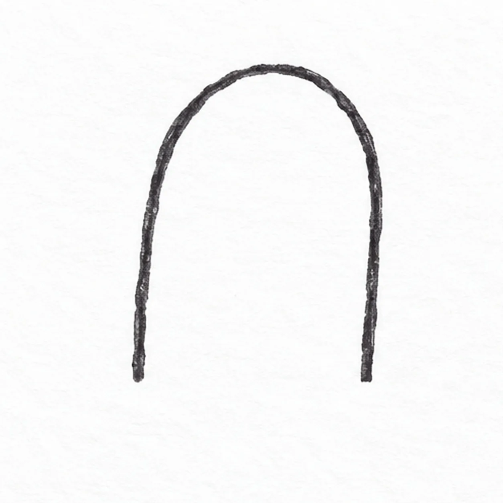
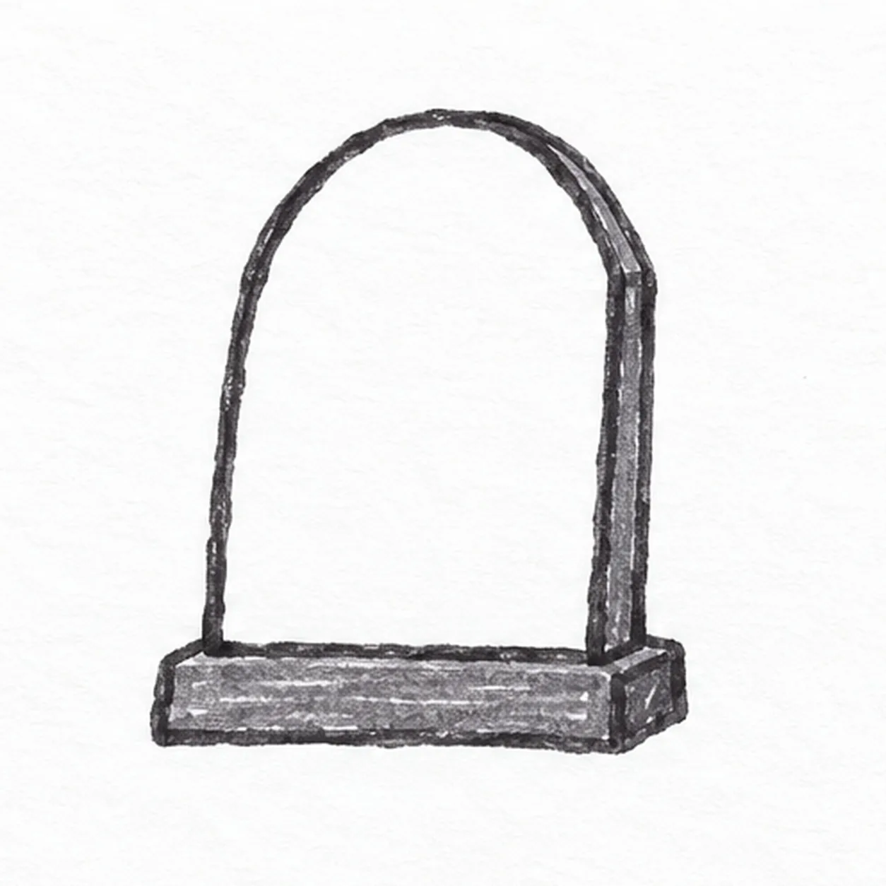
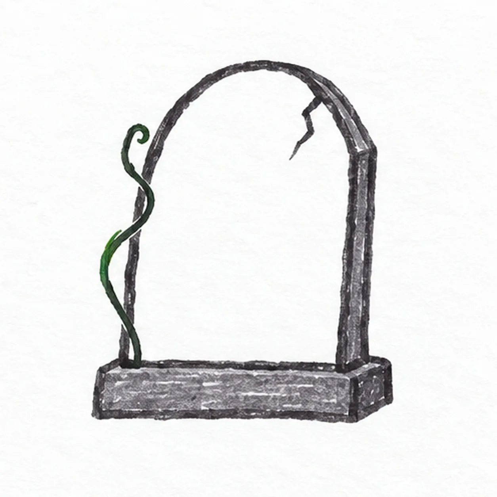
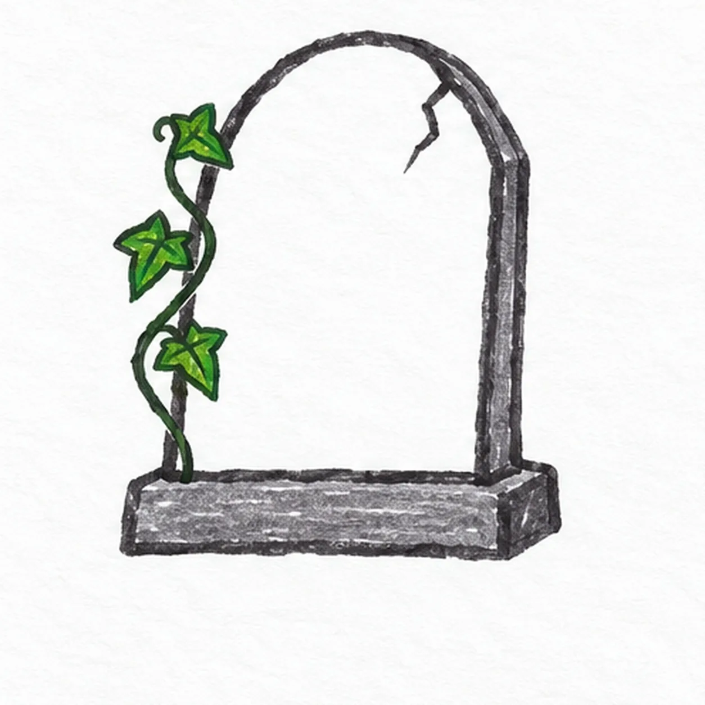
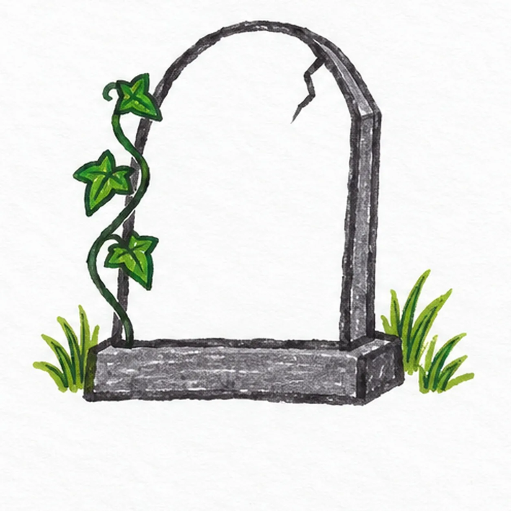

Felt-tip marker mode
Let's draw a tombstone
Treat this as one playful practice round: sketch the idea loosely, simplify the shapes, then commit with confident marker outlines and bright fills.
-
01

Arch the stone
Start at the lower left, rise into a broad arch, curve over the crown and descend to the lower right; leave the two lower ends open for the base.
Marker tip: Keep the arch slightly uneven and its lower ends open for the plinth.
-
02

Set the base
Draw a low rectangular base directly under the stone, letting it extend a little beyond each side. Add a narrow return edge on the right.
Marker tip: Let the plinth extend beyond both stone sides and give it a visible right end.
-
03

Crack and curl
Zigzag a short crack from the upper right crown inward. Curl one green vine up along the left edge, keeping it outside the stone face.
Marker tip: Keep the crack short and the green vine outside the stone face.
-
04

Grow three leaves
Add exactly three pointed green leaves along the existing vine, alternating their directions and keeping the stone face clear.
Marker tip: Count three leaves and alternate their tips along the same curling stem.
-
05

Ground the stone
Put one small grass tuft to the left of the plinth and one to its right, keeping the base outline clear.
Marker tip: One tuft on each side is enough; keep the stone face empty.
-
06

Fill the spooky colors
Fill the stone with streaky lavender marker and the plinth with deeper violet; keep the existing green ivy and grass visible, with a paper highlight open.
Marker tip: Leave a few paper streaks open so the marker still feels handmade.